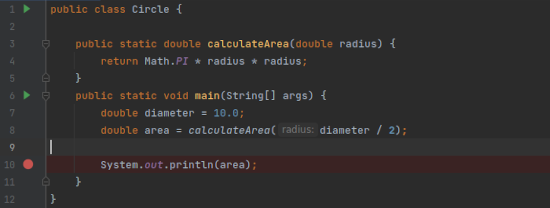
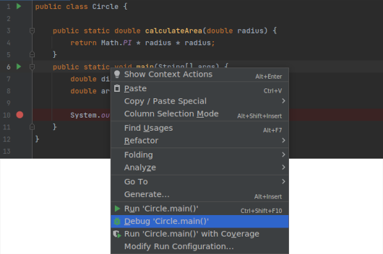
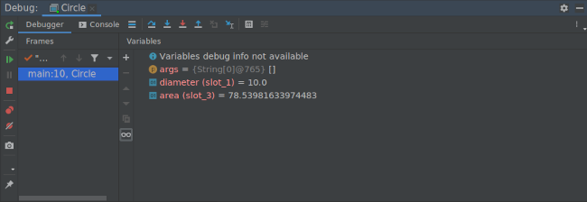

Methoden
Contents
Methoden#
Dit zijn optioneel aanvullende werkboekteksten. Bestudeer deze wanneer je nog wat moeite hebt met het hele idee van methoden, logica en conditionele uitdrukkingen.
De anatomie van een methode#
public static void main(String[] args) {
System.out.println("Hello World");
}
Het voorbeeld dat we nu al zo vaak hebben gezien! We hebben hierdoor ook al kennisgemaakt met methoden, in dit geval de methode main. Een methode kan niet op zichzelf staan en is altijd een onderdeel van een klasse.
public class HelloWorld {
public static void main(String[] args) {
System.out.println("Hello World");
}
}
Laten we de methode stukje bij beetje uitkleden. Wanneer we de body van de methode weglaten (alles wat tussen { en } staat) houden we de signatuur (eng: signature) van de methode over.
public static void main(String[] args)
En als we tot slot de keywords public en static weglaten dan bijft uiteindelijk het volgende over en dit is de essentie van een de definitie van een methode.
Let op, zoals eerder gezegd gaan we later in op de betekenis van deze keywords. Neem voor nu aan (en zeker voor de methode main) dat je ze moet gebruiken.
void main(String[] args)
type naam ( parameters )
Type en naam moeten altijd gedefinieerd worden, het aantal parameters kan 0 of meer zijn.
Java is een statisch getypeerde taal en ook voor methoden moet worden aangegeven wat het type van de waarde is die de functie als resultaat teruggeeft. In het geval van main is dit niets, oftewel void (bedenk dat System.out.println alleen maar pixels op het scherm zet en dus niks teruggeeft).
Methoden definiëren#
public static void newLine() {
System.out.println();
}
System.out.println("First line.");
newLine();
System.out.println("Second line.");
First line.
Second line.
In het boek wordt dit voorbeeld gebruikt. Een je ziet hier een nieuwe methode newLine met de enige taak een nieuwe regel te printen, een lege regel in dit geval. Zodra de methode is gedefinieerd kan het aangeroepen worden, bijvoorbeeld in de methode main.
Parameters en argumenten#
public static void printTwice(String s) {
System.out.println(s);
System.out.println(s);
}
printTwice("Don' t make me say this twice!");
Don' t make me say this twice!
Don' t make me say this twice!
Een methode kan meerdere argumenten ontvangen, maar dit zal je wel moeten definiëren. Dit betekent dat je naast de naam ook het type moet declareren voor de parameters van de methode!
Meerdere parameters#
public static void printTime(int hour, int minute) {
System.out.print(hour);
System.out.print(":");
System.out.println(minute);
}
printTime(11, 59)
11
:
59
Meerdere parameters worden gescheiden door een komma.
Vraag#
Is deze aanroep juist?
printTime(int 11, int 59);
Nee, dit geeft een syntaxfout, omdat de compiler int hour en int minute ziet als variabele declaraties, en niet als expressies die waarden vertegenwoordigen.
De declaratie van variabelen is al eerder gedaan bij het definiëren van de parameters van de methode printTime; bij het aanroepen van de methode hoef je deze alleen maar te initialiseren met een concrete waarde.
Terug naar main#
public static void main(String[] args)
De main methode is speciaal, het is het entry point voor een programma, de eerste methode die wordt aangeroepen als een programma start. Het opstarten van een programma gaan we vaak doen via de command line.
Maar de methode accepteert wel argumenten, waar komen deze vandaan? Met andere woorden, hoe kan bij het opstarten van het programma argumenten worden doorgegeven?
public class Greeter {
public static void main(String[] args) {
System.out.println("Hello " + args[0]);
}
}
> java Greeter.java Misja
Hello Misja
In veel Java-cursussen wordt vaak voorbij gegaan aan wat de parameter String[] args nu precies betekent en hoe het wordt gebruikt. Wij gaan dat wél doen en aan het gebruik (args[0]) kan je misschien al raden dat args iets als een lijst van waarden moet zijn waar de waarde op positie 0 in dit geval het doorgegeven argument is.
args is een array met elementen van type String: we gaan hier later uitgebreid bij arrays stilstaan, inclusief syntax (String[]).
Meerdere argumenten kan je op deze manier doorgeven, steeds gescheiden door een spatie.
Van String naar int#
String s = "42";
int i = Integer.parseInt(s);
args bevat altijd strings, maar wat als het argument een ander type moet zijn, bijvoorbeeld een int? Dan zal je het expliciet moeten omzetten van een String naar een int.
i / 2
21
Vraag#
int i = Integer.parseInt(s);
Wat zou de signatuur van de parseInt methode van de klasse Integer zijn?
public static int parseInt(String s)
Returnwaarden#
Gegeven de formule voor het oppervlak van een cirkel
public static double calculateArea(double radius) {
return Math.PI * radius * radius;
}
Met het return statement laat je de methode een waarde teruggeven; dit moet van het type zijn dat je in de signatuur van de methode hebt aangegeven (in dit geval double).
Gegeven een cirkel met diameter 10
double area = calculateArea(10.0 / 2);
De straal van een cirkel is de helft van de diameter, het resultaat van deze expressie (10.0 / 2) wordt als argument aan calculateArea doorgegeven. Waarom 10.0 en niet 10? calculateArea verwacht een waarde van type double, de expressie 10 / 2 zal een int opleveren!
area
78.53981633974483
Testen#

Testen, of debuggen, is dat een kwestie van perspectief? Wij adviseren een omgekeerde volgorde.
System.out.println("Ik ben nu hier!");
Dit wil niet zeggen dat we print statements afraden als je ergens in de loop van je programma de waarde van een variabele wilt weten of waarom het programma een bepaald punt niet lijkt te bereiken. Maar het kan slimmer door gebruik te maken van het gereedschap dat de IDE biedt.
Debug mode#

Naast elke regel kan je een breakpoint zetten, met een enkele klik en zal zichtbaar worden door een rode stip. Met een breakpoint geef je het punt aan waar je het programma wilt pauzeren om de staat van het programma te inspecteren. Bijvoorbeeld om de waarde van een variabele op dat punt te bekijken.

Rechts-klik op de methode main en kies de Debug optie. Het programma zal nu worden gestart en zal worden doorlopen tot het breakpoint, op dat moment wordt de wereld even stilgezet.

Onderaan in IntelliJ zal nu een debug view zichtbaar worden waar je de staat van het programma op dat moment kan zien.
Tutorial: Debug your first Java application
Debugging your first java application
Bekijk voor IntelliJ de korte inleiding over het gebruik van de debugger. Je zal daar ook zien hoe je een specifieke debug configuratie kan aanmaken, bijvoorbeeld als de methode main via de commandline argumenten moet kunnen accepteren. Maar meer in het algemeen, blader af en toe de algemene documentatie door voor de inrichting en gebruik van IntelliJ.
Quiz#
Vraag 1#
public class CubeMethod {
public static int cube(int i) {
int j = i * i * i;
return j;
}
public static void main(String[] args) {
int i = Integer.parseInt(args[0]);
System.out.println(i + " " + cube(i));
}
}
> java CubeMethod.java 5
Wat is het resultaat van deze aanroep?
5 125
Vraag 2#
public class CubeMethod {
public static int cube(int i) {
int i = i * i * i;
return i;
}
public static void main(String[] args) {
int i = Integer.parseInt(args[0]);
System.out.println(i + " " + cube(i));
}
}
> java CubeMethod.java 5
Wat is het resultaat van deze aanroep?
Let op het kleine verschil in de methode cube, in het vorige voorbeeld werd j als variabele gebruikt, nu i.
CubeMethod.java:5: error: variable i is already defined in method cube(int)
int i = i * i * i;
^
1 error
error: compilation failed
Een compiler fout! De argument variabele i is al gedeclareerd en geïnitialiseerd en de naam kan niet worden hergebruikt.
Vraag 3#
public class CubeMethod {
public static int cube(int i) {
i = i * i * i;
}
public static void main(String[] args) {
int i = Integer.parseInt(args[0]);
System.out.println(i + " " + cube(i));
}
}
> java CubeMethod.java 5
Wat is het resultaat van deze aanroep?
CubeMethod.java:4: error: missing return statement
}
^
1 error
error: compilation failed
Een compiler fout! Een return statement ontbreekt.